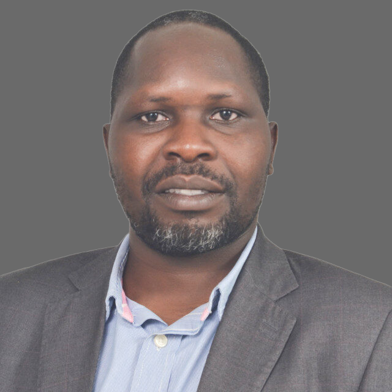
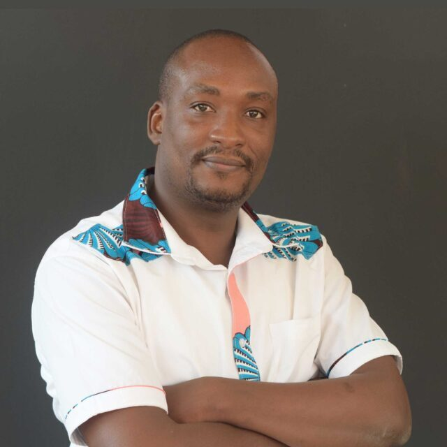
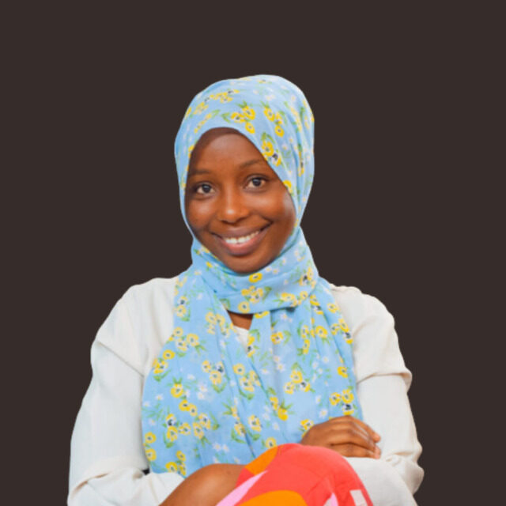
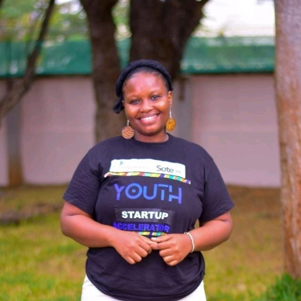
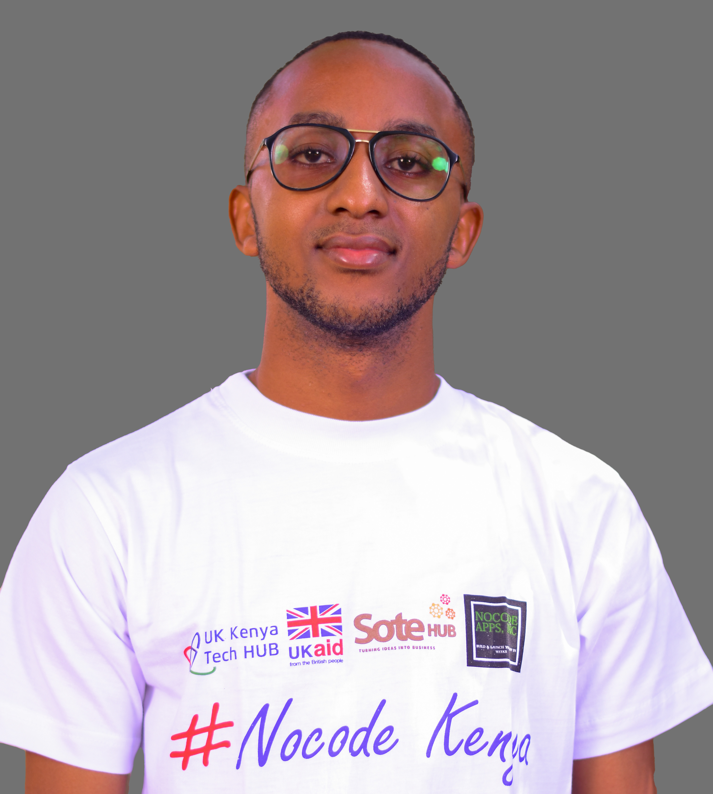
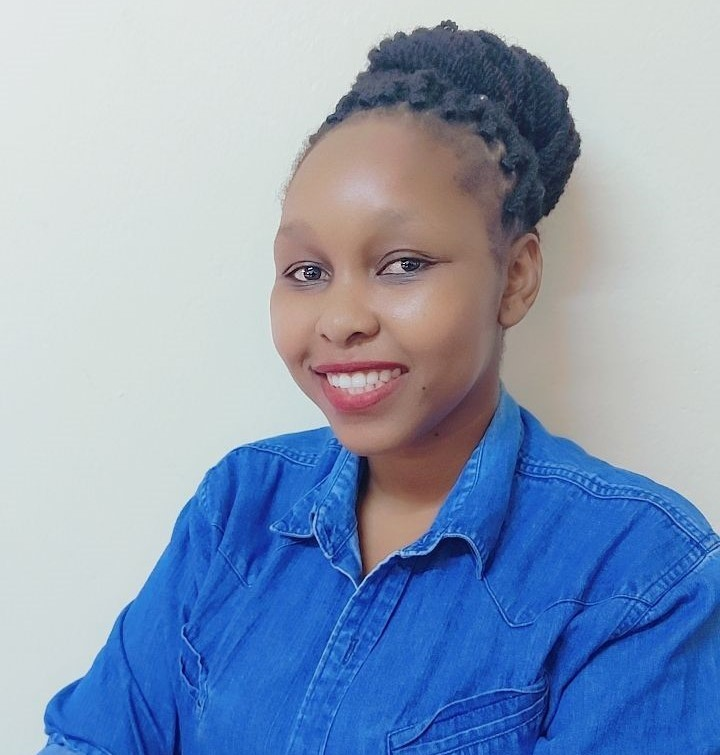
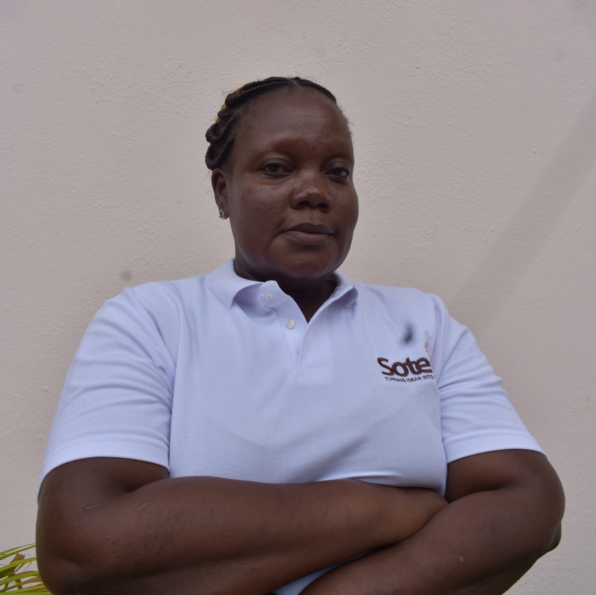
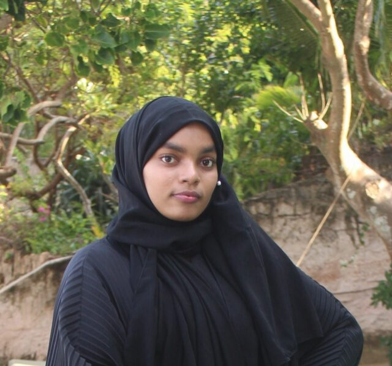

The Team

David Ogiga
Co-founder/DirectorIvana Ulicna
Program Manager/ Board Member
Alvin Chole
Head of ProgramsKenneth Njihia
Head of InnovationGrace Aluora
Finance & Admin Manager
Mejumaa Bakari
Finance & Admin Assistant
Lucia Muthoni
Project Officer
Shadrack Lang'at
Technical Lead
Luke Kamunyu
Technical Assistant
Emmanuel Madanga
Program Assistant / Trainer
Alvinah Mwithi
Communications Officer / Program Assistant
Pamphilia Adhiambo
Office Assistant
Jannat Araphat Abdallah
Expert - Business MarketingDavid Muye Mwangome
Expert - MicrofinanceVolunteers

Biasha Said Dzemba
Community Volunteer
Brian Ochieng
Community Volunteer
Charry Mwatika
Community Volunteer
Daniel Mwoki Kiliku
Community Volunteer
Cristal Riziki
Community Volunteer
Jason Wanyonyi
Community Volunteer
Mwanzia Rose Mutuku
Community Volunteer
Paul Juma
Community Volunteer
Vera Accasia Kinoro
Community Volunteer